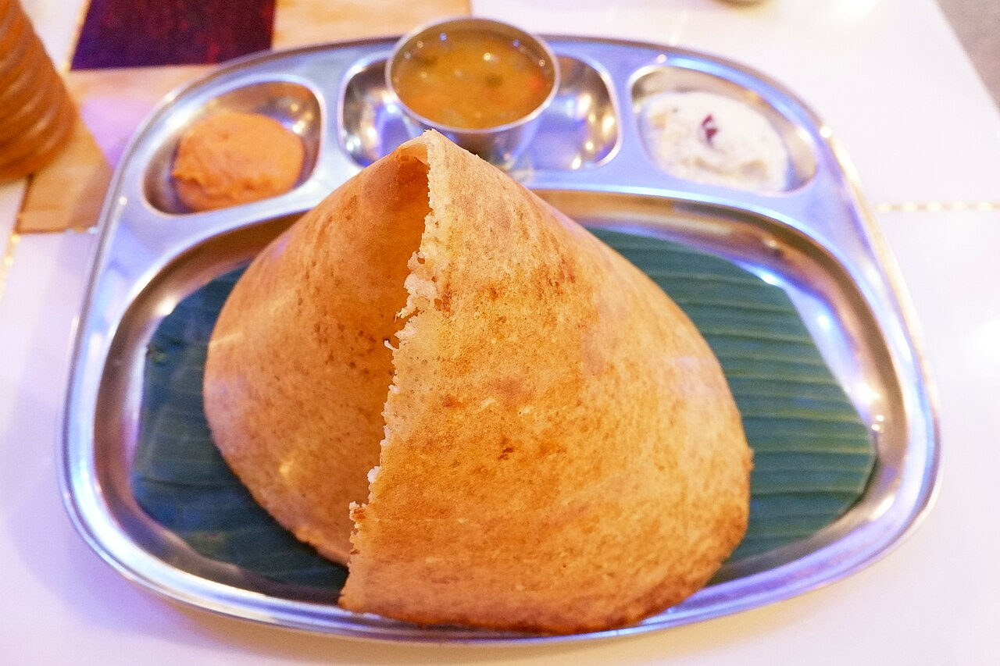

Dosa | தோசை
A South Indian staple dish.
Serve with molaga podi and mint chutney!
Ingredients
- ID dosa batter
- 1 tbsp salt
- 1/2 cup water
Steps
- Open the dosa batter bag and mix in the salt and water.
- Heat a nonstick pan (or iron skillet) until a drop of water bounces across the surface.
- With a ladle, pour a cup of the batter into the center of the pan and swirl it in a circular motion outward.
- Wait for it to brown, then flip it to cook the other side.
- Remove when crispy and serve!
Home